OU model in Nimble
Sanity test with a simple model, Start with some sample data from an OU process:
library("sde")## Loading required package: MASS## Loading required package: stats4## Loading required package: fda## Loading required package: splines## Loading required package: Matrix##
## Attaching package: 'fda'## The following object is masked from 'package:graphics':
##
## matplot## Loading required package: zoo##
## Attaching package: 'zoo'## The following objects are masked from 'package:base':
##
## as.Date, as.Date.numeric## sde 2.0.15## Companion package to the book## 'Simulation and Inference for Stochastic Differential Equations With R Examples'## Iacus, Springer NY, (2008)## To check the errata corrige of the book, type vignette("sde.errata")library("nimble")##
## Attaching package: 'nimble'## The following object is masked from 'package:fda':
##
## inprod## The following object is masked from 'package:stats':
##
## simulatelibrary("methods")
set.seed(123)
d <- expression(0.5 * (10-x))
s <- expression(1)
data <- as.data.frame(sde.sim(X0=6,drift=d, sigma=s, T=20, N=100))## sigma.x not provided, attempting symbolic derivation.plot(data)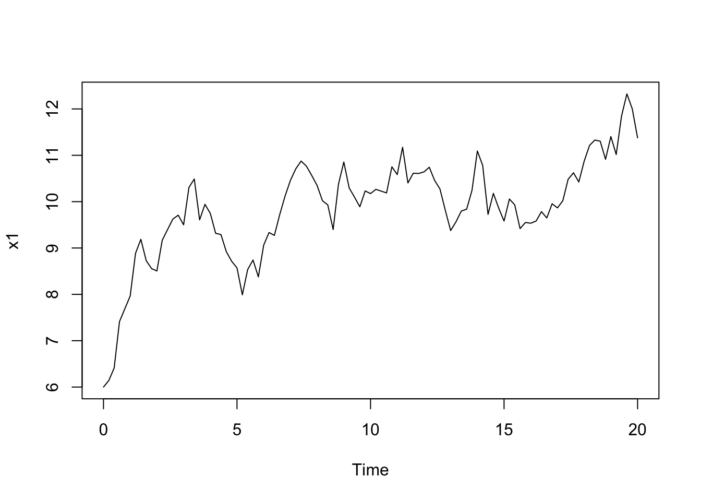
Specify this model in Nimble BUGS code
ou <- nimbleCode({
theta ~ dunif(1e-10, 100.0)
r ~ dunif(1e-10, 20.0)
sigma ~ dunif(1e-10, 100)
x[1] ~ dunif(0, 100)
for(t in 1:(N-1)){
mu[t] <- x[t] + r * (theta - x[t])
x[t+1] ~ dnorm(mu[t], sd = sigma)
}
})nimble parameters
const <- list(N = length(data$x))
ou_inits <- list(theta = 6, r = 1, sigma = 1)Create, spec, build, & compile
ou_Rmodel <- nimbleModel(code = ou, constants = const, data = data, inits = ou_inits)## defining model...## building model...## setting data and initial values...## running calculate on model (any error reports that follow may simply
## reflect missing values in model variables) ...## ## checking model sizes and dimensions...## ## model building finished.ou_spec <- configureMCMC(ou_Rmodel, thin=1e2)
ou_Rmcmc <- buildMCMC(ou_spec)
ou_Cmodel <- compileNimble(ou_Rmodel)## compiling... this may take a minute. Use 'showCompilerOutput = TRUE' to see C++ compiler details.## compilation finished.ou_mcmc <- compileNimble(ou_Rmcmc, project = ou_Cmodel)## compiling... this may take a minute. Use 'showCompilerOutput = TRUE' to see C++ compiler details.
## compilation finished.Run the MCMC
ou_mcmc$run(1e4)## |-------------|-------------|-------------|-------------|
## |-------------------------------------------------------|## NULLand examine the results
samples <- as.data.frame(as.matrix(ou_mcmc$mvSamples))
mean(samples$theta)## [1] 10.47953mean(samples$sigma)## [1] 0.392594mean(samples$r)## [1] 0.1026019plot(samples[ , 'r'], type = 'l', xlab = 'iteration', ylab = expression(r))
plot(samples[ , 'sigma'], type = 'l', xlab = 'iteration', ylab = expression(sigma))
plot(samples[ , 'theta'], type = 'l', xlab = 'iteration', ylab = expression(theta))
plot(samples[ , 'r'], samples[ , 'sigma'], xlab = expression(r), ylab = expression(simga))
hist(samples[, 'theta'])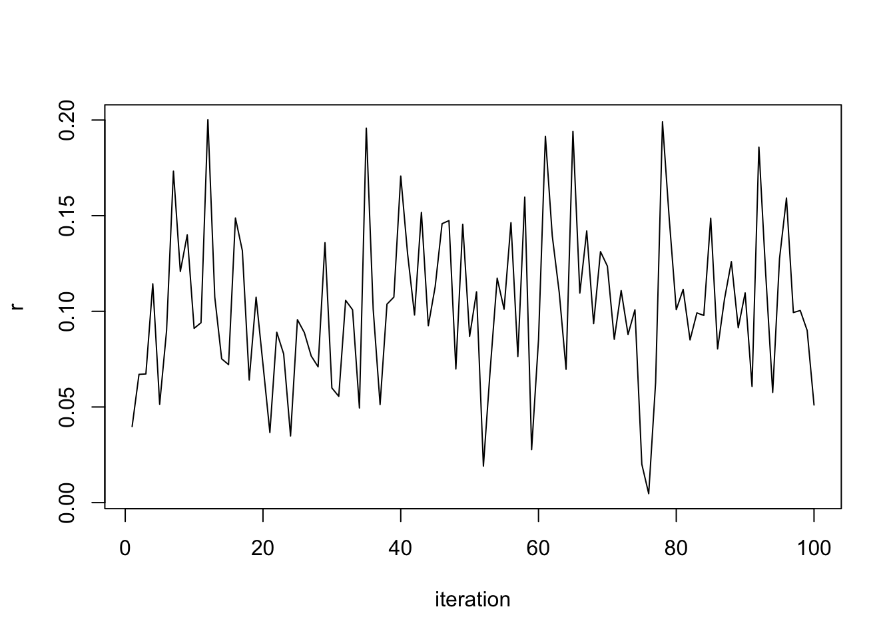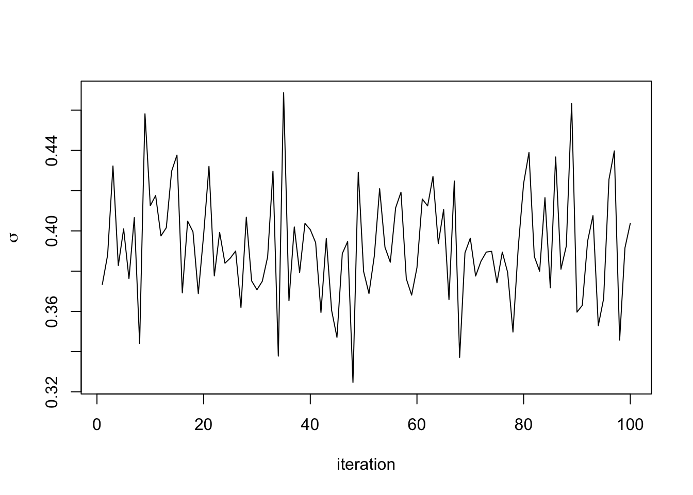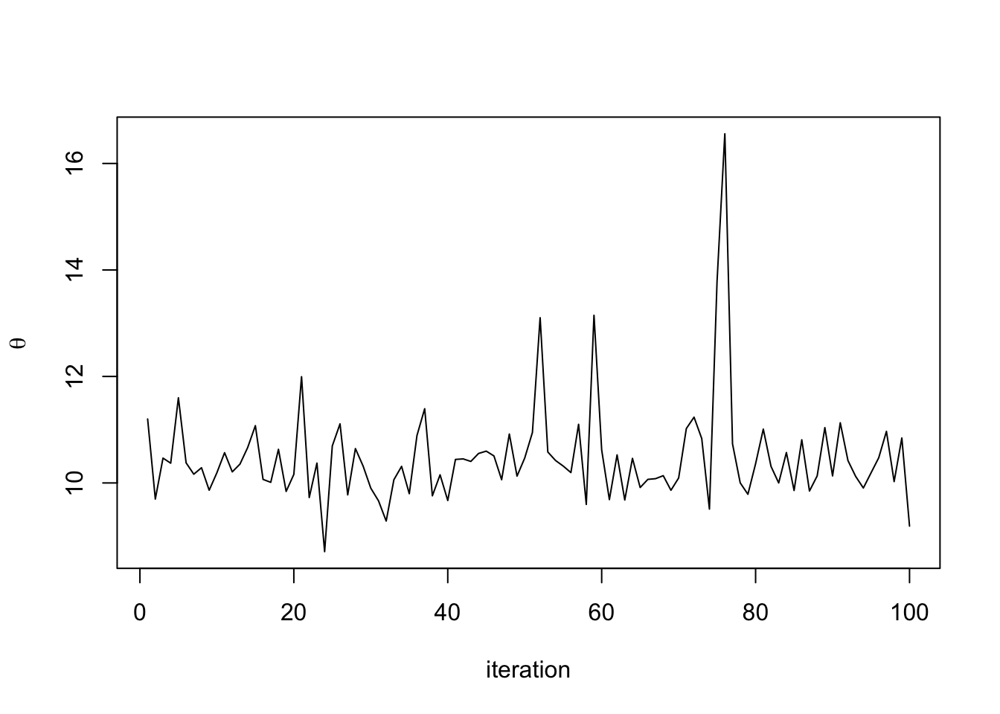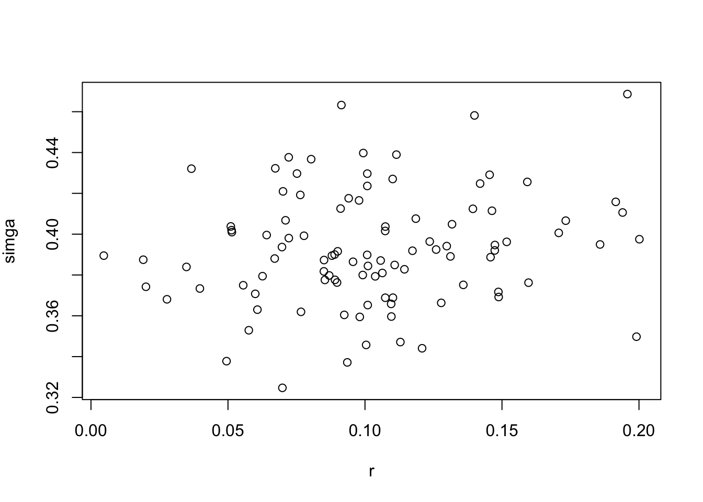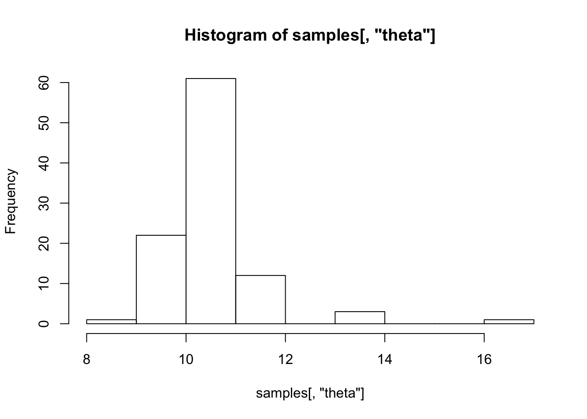
Block sampler
ou_spec$addSampler(c('r','sigma','theta'), type = "RW_block", control = list(adaptInterval=100))
ou_Rmcmc2 <- buildMCMC(ou_spec)ou_mcmc2 <- compileNimble(ou_Rmcmc2, project=ou_Rmodel, resetFunctions=TRUE)## compiling... this may take a minute. Use 'showCompilerOutput = TRUE' to see C++ compiler details.## compilation finished.(not clear why we use the old project here; but seems to allow us to inherit from previous settings, e.g. the monitors from configureMCMC() initialization)
ou_mcmc2$run(1e4)## |-------------|-------------|-------------|-------------|
## |-------------------------------------------------------|## NULLsamples2 <- as.data.frame(as.matrix(ou_mcmc2$mvSamples))
mean(samples2$theta)## [1] 10.46894plot(samples2[ , 'r'], type = 'l', xlab = 'iteration', ylab = expression(r))
plot(samples2[ , 'sigma'], type = 'l', xlab = 'iteration', ylab = expression(sigma))
plot(samples2[ , 'theta'], type = 'l', xlab = 'iteration', ylab = expression(theta))
plot(samples2[ , 'r'], samples[ , 'sigma'], xlab = expression(r), ylab = expression(simga))
hist(samples2[ , 'theta'])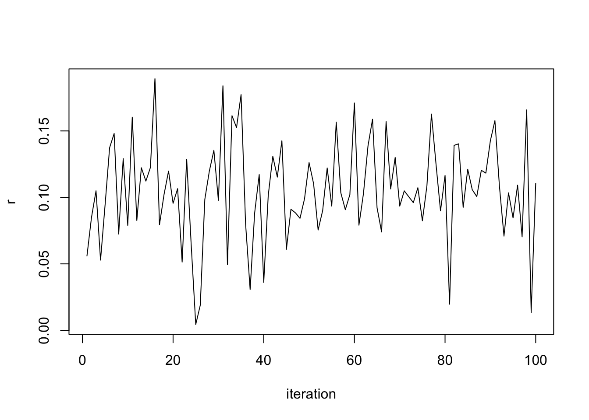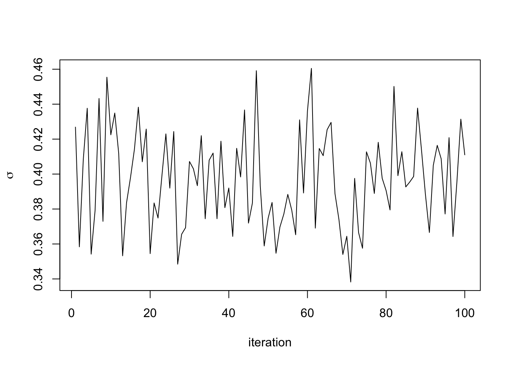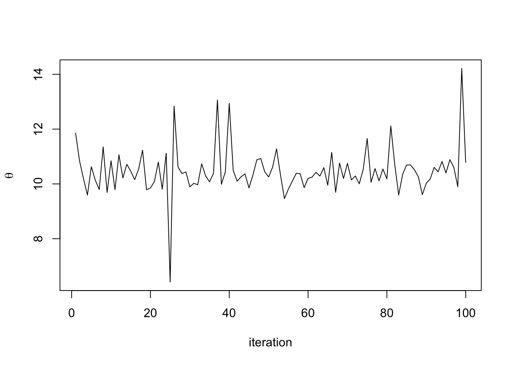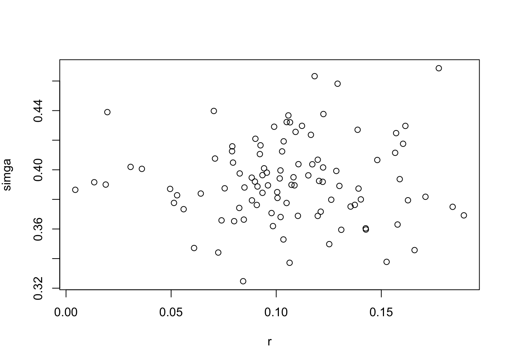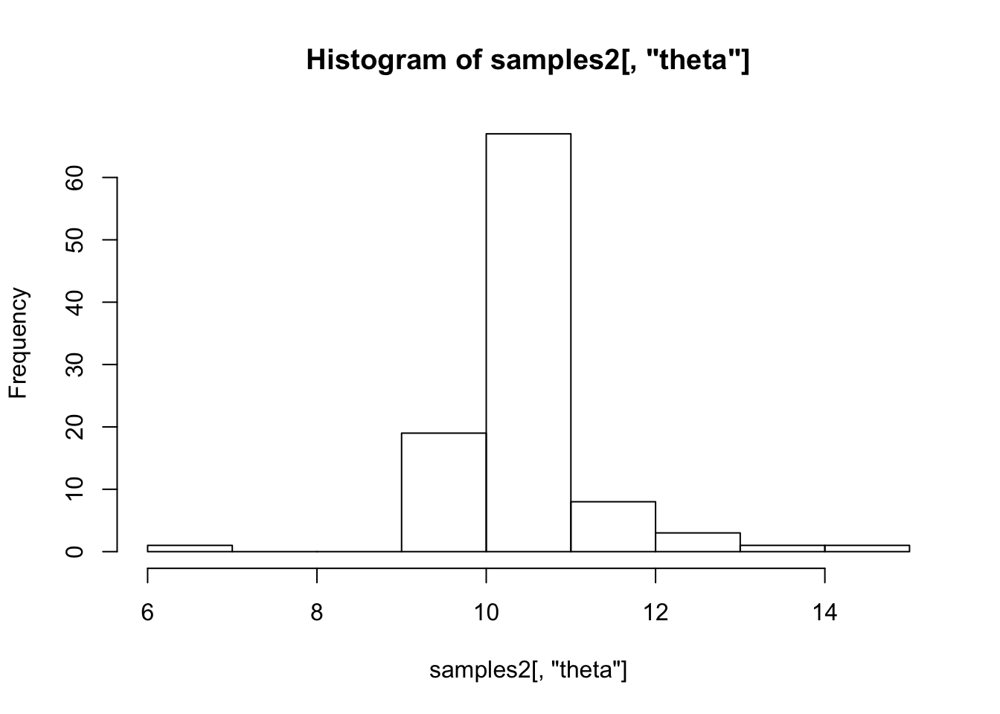